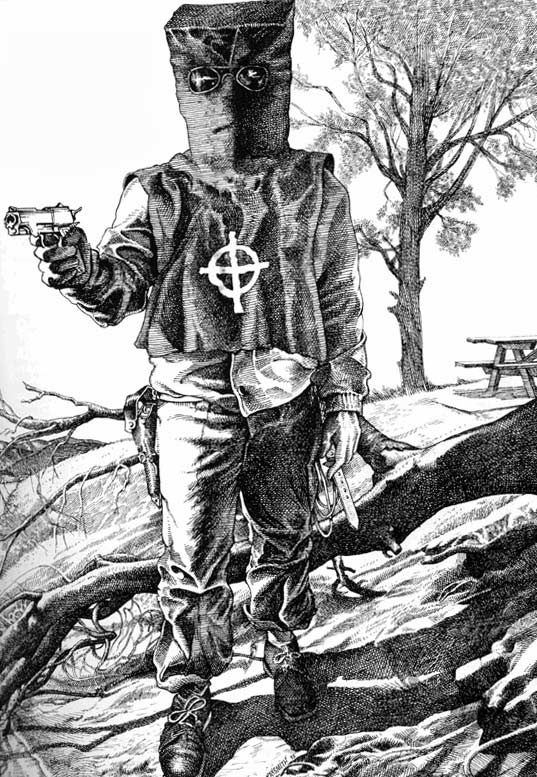

The Zodiac Killer was a serial killer who operated in northern California in the late 1960s and early 1970s. The killer's identity remains unknown. The Zodiac murdered victims in Benicia, Vallejo, Lake Berryessa, and San Francisco between December 1968 and October 1969. Four men and three women between the ages of 16 and 29 were targeted. The killer originated the name "Zodiac" in an August 7, 1969 letter to the local Bay Area press, which was just one in a series of taunting letters. These letters included four cryptograms (or ciphers). Of the four cryptograms sent, only one has been definitively solved. Suspects have been named by law enforcement and amateur investigators, but no conclusive evidence has surfaced. In April 2004, the San Francisco Police Department (SFPD) marked the case "inactive", yet re-opened the case at some point prior to March 2007. The case also remains open in the city of Vallejo, as well as in Napa County and Solano County. The California Department of Justice has maintained an open case file on the Zodiac murders since 1969.
Confirmed Victims: